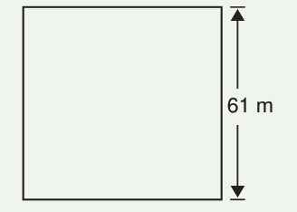
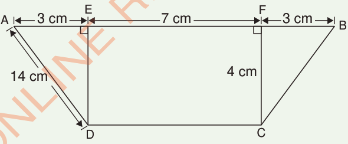

7.
Find the area of the following shape.

8.
A rectangle has a length of 18 centimetres and a width of 14 centimetres. Find the area of the rectangle.
9.
A square-shaped garden has a width of 27 metres. Find the area of the garden.
10.
Find the area of a triangle with a base of 70 cm and a height of 84 cm.
11.
Find the area of the following shape.

12.
The floor of a classroom has a length of 14 metres and a width of 6 metres. Find the area of the floor.
13.
The area of a triangle is 1485 square centimetres. If its base has a length of 66 centimetres, find the length of its height.
14.
The area of a rectangle is 1134 square metres. If its length is 42 centimetres, find its width.
15.
The area of the school farm is 3,072 square metres. If its width is 40 metres, find its length.